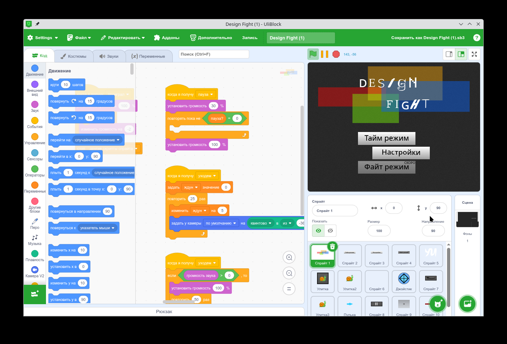

12 галерей расширений с кэшем
Встроенный каталог расширений сообщества (12 источников, 14 категорий) автоматически сохраняет расширения на диск для работы без интернета с указанием автора.
Открытый форк TurboWarp Desktop: 12 галерей расширений с офлайн-кэшем, редактор костюмов PenguinMod-Paint, упаковщик в EXE и HTML, проводник проекта SB3 Explorer и живые Lottie-обои.

Всё, что нужно для разработки игр и анимаций на базе Scratch офлайн — без тяжёлых встроенных библиотек и лишних окон.
Встроенный каталог расширений сообщества (12 источников, 14 категорий) автоматически сохраняет расширения на диск для работы без интернета с указанием автора.
Расширенный векторный и растровый редактор костюмов в зелёной теме с дополнительными инструментами рисования и 7 новыми шрифтами.
Собирайте проекты в самостоятельный HTML-файл, ZIP-архив или приложение для ПК прямо из меню редактора без браузера.
Иерархическое дерево файлов проекта, выборочный экспорт спрайтов .sprite3, отправка скрипта сразу в несколько спрайтов и глобальная очистка кода.
Настраивайте свой акцентный цвет, подключайте свой CSS, меняйте иконки и ставьте анимированные обои .json и .lottie на фон рабочей области.
Удалены лишние стандартные ассеты, а автообновление умеет скачивать установщик в фоне и запускаться только после закрытия всех окон.
Переключайте вкладки, чтобы посмотреть основные возможности редактора и инструментов UliBlock.
Фирменная зелёная тема, встроенные инструменты разработчика (поиск по блокам Ctrl+F, координаты курсора, отладчик) и удобное переключение сцен и спрайтов.
xy-grid доступны в новых проектах и меню костюма..sb, .sb2 и .sb3.UliBlock сохраняет совместимость с .sb3, добавляя инструменты, которых не хватает в стандартных клиентах.
| Возможность | Scratch Desktop | TurboWarp Desktop | UliBlock |
|---|---|---|---|
| Компилятор JS, 60 FPS и тёмная тема | — | ✓ | ✓ |
| 12 галерей расширений с офлайн-кэшем | — | Только URL вручную | ✓ Каталог + кэш |
| Редактор костюмов PenguinMod-Paint + 14 шрифтов | Базовый | Стандартный | ✓ Встроен |
| Встроенный упаковщик в HTML / EXE / ZIP | — | Отдельно в браузере | ✓ Uli Packager внутри |
| Проводник проекта SB3 Explorer и экспорт .sprite3 | — | — | ✓ В меню «Файл» |
| Редактор тем, кастомный CSS и живые Lottie-обои | — | Только акценты | ✓ Полный редактор |
| Очистка всех спрайтов и отправка скриптов группой | — | — | ✓ Улитка-уборщик |
| Отложенное обновление «Обновить после работы» | — | — | ✓ Фоновая загрузка |
Выберите вашу операционную систему — подберём готовый установщик или портативную сборку.
UliBlock-Setup-1.6.0-x64.msi — установка пройдёт со стандартным прогресс-баром Windows Installer..sb3, .sb2 и .sb настроятся автоматически.UliBlock-Installer-linux-x64-1.6.0.AppImage и разрешите запуск: chmod +x UliBlock-Installer-*.AppImage..sb3.unsandboxed без диалога подтверждения. Открывайте .sb3 и подключайте расширения только из доверенных источников.
Свежие версии и ссылка на полный журнал изменений в репозитории.
.json и .lottie обоев в Редакторе тем с настройкой скорости, прозрачности и размытия.t.isDisposed is not a function при очистке кода во всех спрайтах и комментариях..rpm и проводник проекта SB3 Explorer со сворачиванием папок TurboWarp.Короткие ответы об установке, совместимости проектов и работе обновлений.
Да. Проекты сохраняются в стандартном формате .sb3. Если вы не использовали сторонние расширения из галереи сообщества, файл без проблем откроется и в обычном Scratch, и в TurboWarp.
Когда вы открываете расширение из встроенной галереи, UliBlock сохраняет его локально на диск. После этого проект с этим расширением продолжит запускаться даже полностью без доступа к интернету.
Режим unsandboxed даёт расширениям больше возможностей (например, для сложных графических, системных или сетевых блоков), но код расширения выполняется с полными правами окна редактора. Подключайте расширения и открывайте чужие .sb3 только от авторов, которым доверяете.
При появлении новой версии нажмите «Обновить после работы»: установщик начнёт скачиваться в фоне, пока вы спокойно доделываете проект. Как только вы закроете все окна UliBlock, установка запустится автоматически.
Нет. Ни на этом сайте, ни в самой программе нет аналитики, рекламных трекеров, cookies и сбора пользовательских данных. Обращения в сеть происходят только при проверке обновлений на GitHub или загрузке расширений по вашему выбору.